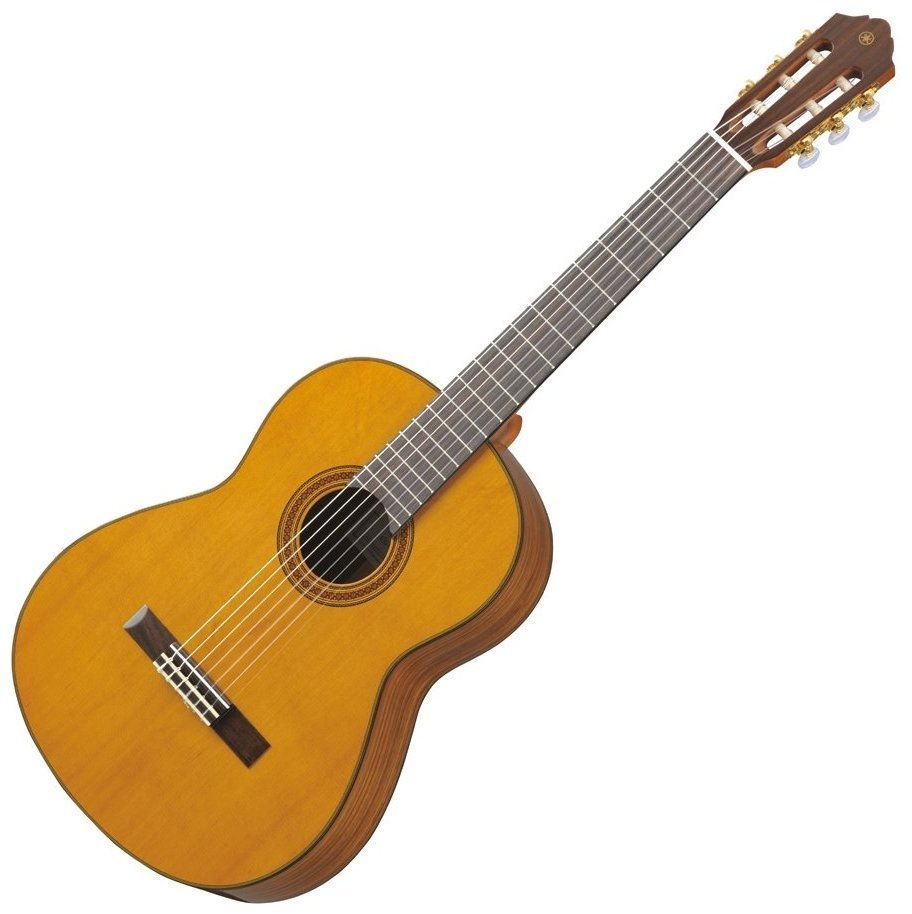

Гіта́ра (ісп. guitarra) — струнний музичний інструмент родини лютень. Звук створюється вібрацією струн і підсилюється резонатором — декою інструменту. Гітари поділяються на класичні, акустичні, електроакустичні, електричні та напівакустичні. Крім того гітари розрізняють за кількістю та матеріалом виготовлення струн, будовою корпусу і призначенням. Гітару використовують як сольний, акомпануючий та ансамблевий інструмент у різних музичних напрямках.
